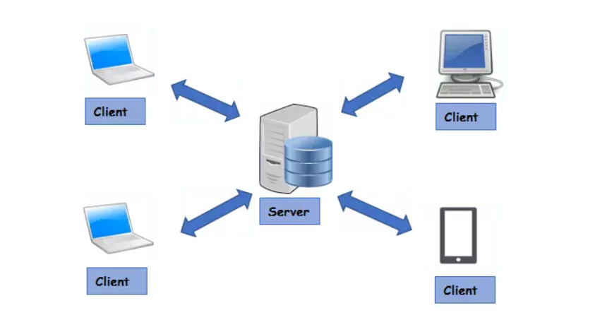
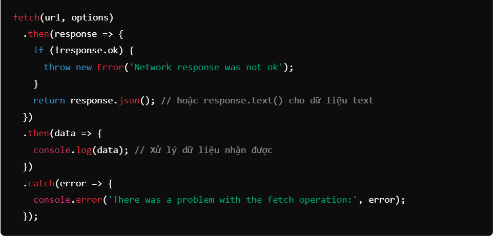

JavaScript API Integration
Giới thiệu
Trong thế giới web hiện đại, hầu hết các ứng dụng đều cần trao đổi dữ liệu với máy chủ hoặc dịch vụ khác thông qua API.
JavaScript API Integration chính là kỹ năng giúp bạn “nối cầu” giữa giao diện người dùng và dữ liệu thật.
Bằng cách sử dụng Fetch API, RESTful APIs và thao tác với JSON data, bạn có thể xây dựng ứng dụng động –
hiển thị dữ liệu thời gian thực, tạo tương tác mượt mà và cá nhân hóa trải nghiệm người dùng.
1. REST API là gì?
REST (Representational State Transfer) là tiêu chuẩn phổ biến nhất để thiết kế API. Nó hoạt động dựa trên các phương thức HTTP quen thuộc:
- GET – Lấy dữ liệu (ví dụ: danh sách sản phẩm, bài viết,...)
- POST – Gửi dữ liệu (ví dụ: tạo tài khoản, thêm bình luận,...)
- PUT / PATCH – Cập nhật dữ liệu hiện có
- DELETE – Xóa dữ liệu

Hình trên minh họa mô hình Client – Server trong kiến trúc REST API (Representational State Transfer). Trong mô hình này, Server đóng vai trò lưu trữ và xử lý dữ liệu, đồng thời cung cấp các API cho phép các Client (như máy tính, laptop, điện thoại hoặc trình duyệt web) truy cập và thao tác với dữ liệu thông qua giao thức HTTP. Các Client sẽ gửi yêu cầu (request) đến Server để thực hiện các hành động như GET (lấy dữ liệu, ví dụ danh sách sản phẩm hoặc bài viết), POST (gửi dữ liệu, ví dụ tạo tài khoản hoặc thêm bình luận), PUT/PATCH (cập nhật dữ liệu hiện có) và DELETE (xóa dữ liệu). Sau khi nhận được yêu cầu, Server sẽ xử lý và trả về phản hồi (response) tương ứng cho Client, giúp việc trao đổi thông tin giữa hai bên trở nên hiệu quả, linh hoạt và thống nhất.
“API là cầu nối giúp JavaScript trò chuyện với thế giới — từ thời tiết, tin tức đến mạng xã hội.”
2. Làm quen với Fetch API
Fetch API là công cụ tích hợp sẵn trong trình duyệt giúp bạn gửi yêu cầu HTTP và nhận phản hồi một cách đơn giản.
Nó trả về Promise, nên rất tiện khi kết hợp với async / await.
// Ví dụ đơn giản sử dụng Fetch API
fetch('https://api.example.com/users')
.then(response => response.json())
.then(data => console.log(data))
.catch(error => console.error('Lỗi:', error));
Đoạn code trên gửi yêu cầu GET đến API, sau đó chuyển phản hồi thành JSON và in kết quả ra console.
Nếu có lỗi (mất mạng, sai URL, lỗi server) thì khối catch sẽ xử lý.
3. Xử lý JSON trong JavaScript
Dữ liệu API thường ở định dạng JSON (JavaScript Object Notation) – dễ đọc và dễ thao tác. Bạn có thể chuyển đổi qua lại giữa JSON và Object bằng:
// Object → JSON
const user = { name: 'Thinh', age: 22 };
const jsonString = JSON.stringify(user);
// JSON → Object
const parsed = JSON.parse(jsonString);
console.log(parsed.name); // 'Thinh'
👉 Khi làm việc với API, hãy nhớ: response.json() cũng là một Promise — bạn cần await hoặc then() để lấy dữ liệu.
4. Async / Await – Code gọn gàng hơn
Sử dụng async / await giúp bạn viết code xử lý API dễ đọc hơn nhiều so với callback lồng nhau.
async function loadUsers() {
try {
const res = await fetch('https://jsonplaceholder.typicode.com/users');
const data = await res.json();
console.log('Danh sách người dùng:', data);
} catch (error) {
console.error('Lỗi khi tải dữ liệu:', error);
}
}
loadUsers();
👉 Đây là phong cách hiện đại trong hầu hết framework (React, Vue, Node.js) vì dễ debug và dễ mở rộng.
5. Gửi dữ liệu (POST Request)
Ngoài việc đọc dữ liệu, bạn còn có thể gửi thông tin đến server — ví dụ, thêm người dùng mới:
async function createUser() {
const newUser = { name: 'Alex', email: 'alex@mail.com' };
try {
const res = await fetch('https://jsonplaceholder.typicode.com/users', {
method: 'POST',
headers: {
'Content-Type': 'application/json'
},
body: JSON.stringify(newUser)
});
const data = await res.json();
console.log('Người dùng mới:', data);
} catch (err) {
console.error('Lỗi khi gửi dữ liệu:', err);
}
}
createUser();
👉 Luôn nhớ thiết lập header Content-Type: application/json khi gửi dữ liệu dạng JSON.
6. Xử lý lỗi và Loading UI
API có thể phản hồi chậm hoặc lỗi, vì vậy bạn nên thêm trạng thái loading và kiểm tra mã phản hồi HTTP:
async function getPosts() {
const loading = document.querySelector('#loading');
loading.textContent = 'Đang tải...';
try {
const res = await fetch('https://jsonplaceholder.typicode.com/posts');
if (!res.ok) throw new Error('Không thể tải dữ liệu!');
const posts = await res.json();
console.log(posts);
loading.textContent = 'Hoàn tất!';
} catch (err) {
loading.textContent = 'Lỗi xảy ra!';
console.error(err);
}
}
getPosts();
“Trải nghiệm người dùng tốt bắt đầu từ việc xử lý lỗi và trạng thái tải thông minh.”
7. Kết hợp API với giao diện
Dữ liệu JSON có thể dễ dàng hiển thị lên HTML bằng cách thao tác DOM. Ví dụ: hiển thị danh sách bài viết lấy từ API:
async function renderPosts() {
const container = document.querySelector('#postList');
const res = await fetch('https://jsonplaceholder.typicode.com/posts');
const posts = await res.json();
container.innerHTML = posts
.slice(0, 5)
.map(p => `<li><strong>${p.title}</strong><br>${p.body}</li>`)
.join('');
}
renderPosts();

Hình trên minh họa cách sử dụng Fetch API trong JavaScript để lấy dữ liệu từ một API và xử lý kết quả trả về. Lệnh fetch(url, options) được dùng để gửi yêu cầu đến máy chủ. Khi phản hồi được trả về, .then(response => {...}) kiểm tra xem phản hồi có thành công không (response.ok), nếu không thì báo lỗi.
Nếu thành công, dữ liệu sẽ được chuyển đổi sang định dạng JSON bằng response.json() để dễ dàng xử lý. Ở phần .then(data => {...}), dữ liệu JSON nhận được sẽ được truy cập và có thể hiển thị lên giao diện web thông qua thao tác DOM, ví dụ như hiển thị danh sách bài viết.
Cuối cùng, .catch(error => {...}) được dùng để bắt và xử lý các lỗi xảy ra trong quá trình gửi yêu cầu hoặc nhận phản hồi.
Trong mô hình này, Client (có thể là máy tính, laptop, điện thoại hay máy tính bảng) gửi yêu cầu thông qua Internet đến Web Server (ở đây là máy chủ UNIX chạy Apache Web Server, lưu trữ các tệp JSP hoặc API). Server tiếp nhận yêu cầu, truy xuất dữ liệu từ Database (ví dụ Oracle Database), sau đó trả kết quả về cho Client dưới dạng dữ liệu JSON.
Trên phía Client, JavaScript sẽ nhận dữ liệu JSON này và hiển thị trực tiếp lên giao diện HTML bằng cách thao tác DOM(Document Object Model) .
Ví dụ, lập trình viên có thể dùng lệnh fetch() để lấy dữ liệu bài viết từ API, sau đó hiển thị tiêu đề và nội dung ra danh sách HTML.
8. Tổng kết
Tích hợp API là kỹ năng cốt lõi của lập trình web hiện đại.
Khi bạn hiểu rõ cách dùng fetch, xử lý JSON, và kết hợp async/await,
bạn có thể kết nối ứng dụng với hầu hết mọi dịch vụ trực tuyến — từ OpenWeather, GitHub, đến ChatGPT API.
👉 Hãy thực hành bằng cách gọi thử các API công khai (như JSONPlaceholder hoặc OpenWeatherMap)
và hiển thị dữ liệu ngay trên giao diện của bạn.
“API không chỉ là dữ liệu — nó là cánh cửa để JavaScript của bạn kết nối với cả thế giới.”